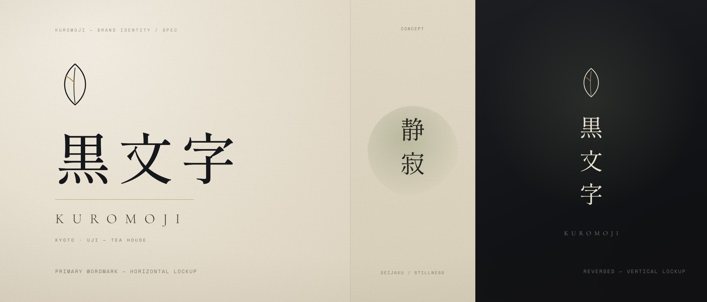
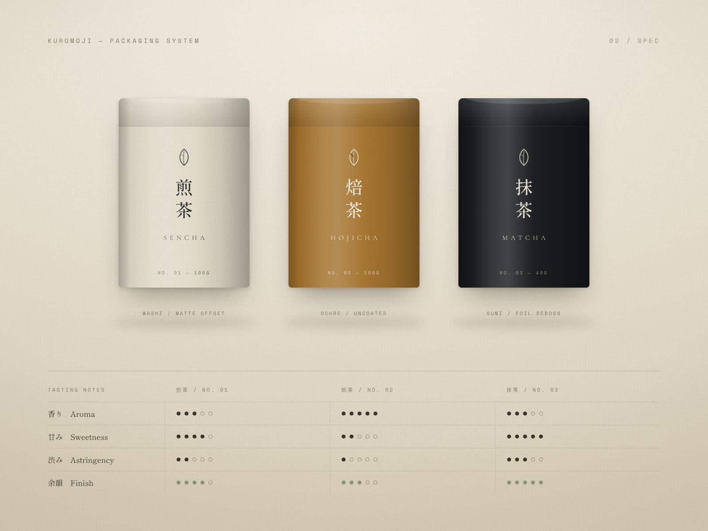
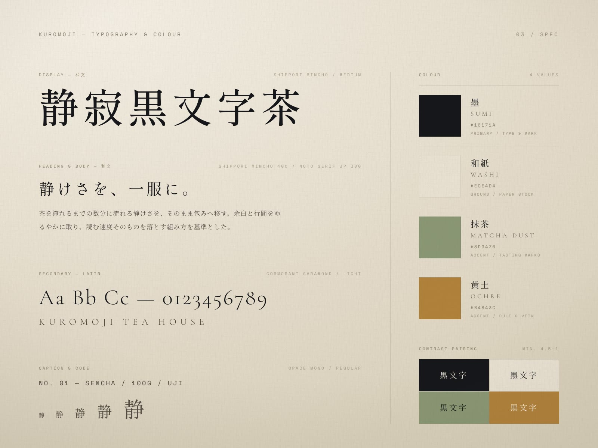
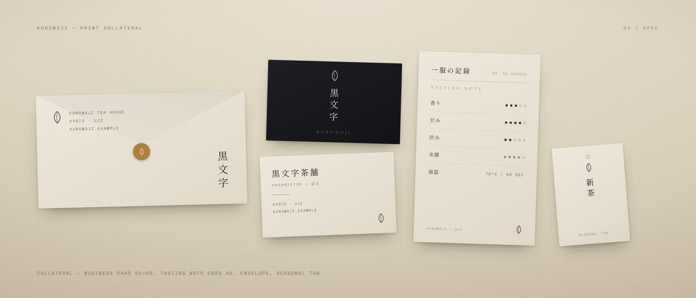

京都・宇治の老舗茶舗を想定したリブランディング。コンセプトは「静寂」。茶を淹れて待つ数分の静けさを、記号と余白だけに置き換えた。
架空のプロジェクトです。実在のクライアント・実績ではありません。

コンセプトは「静寂」。湯が落ち着くのを待つ数分間そのものを、この店の価値として扱った。伝統を語り直すのではなく、余白と間合いだけで格を示すことを設計の基準にしている。
和文はしっぽり明朝、欧文は Cormorant Garamond。色は墨・和紙・抹茶・黄土の四値に絞り、装飾要素は持たせない。判断に迷ったときは常に「引く」側へ倒す、という一本のルールでシステム全体を通した。


シンボルは一枚の茶葉を一本の輪郭に還元し、葉脈に黄土の一線だけを残した。横組み・縦組み・白黒反転の三形をひと組として整え、名刺からラベルまで同じ比率で展開できるようにしている。
パッケージは煎茶・焙茶・抹茶の3SKU。和紙／黄土／墨の三つの塗り分けに、香り・甘み・渋み・余韻を点列で示すテイスティングノートを共通言語として載せた。印刷物は名刺、一服の記録（テイスティングカード）、封筒、季節タグの四点。すべて同じ余白比率で組み、手に取る順に静けさが続くよう設計した。

本ページは構想（Spec）です。実在するクライアントの業務ではなく、掲載している画像はすべてこの案のために制作したデザインボードです。
効果・売上・受賞・メディア掲載といった実績の数値は一切掲載していません。示しているのはデザインの意図と、実際に作ったアウトプットの範囲だけです。